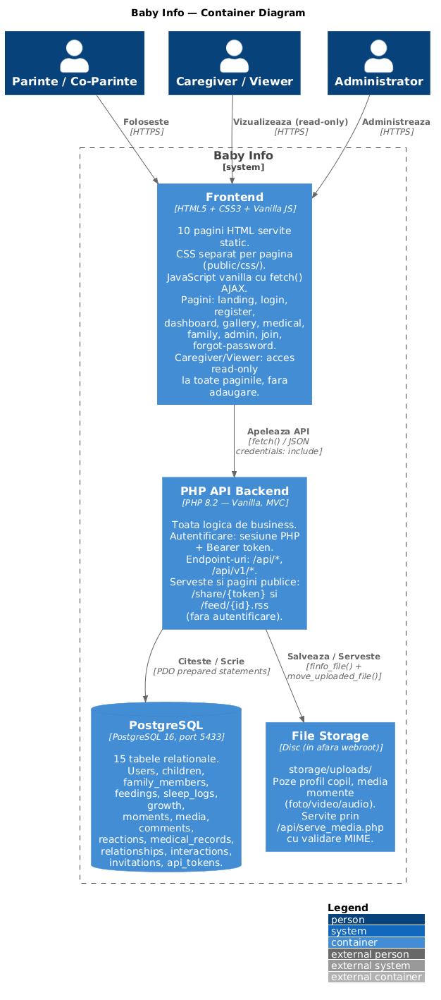
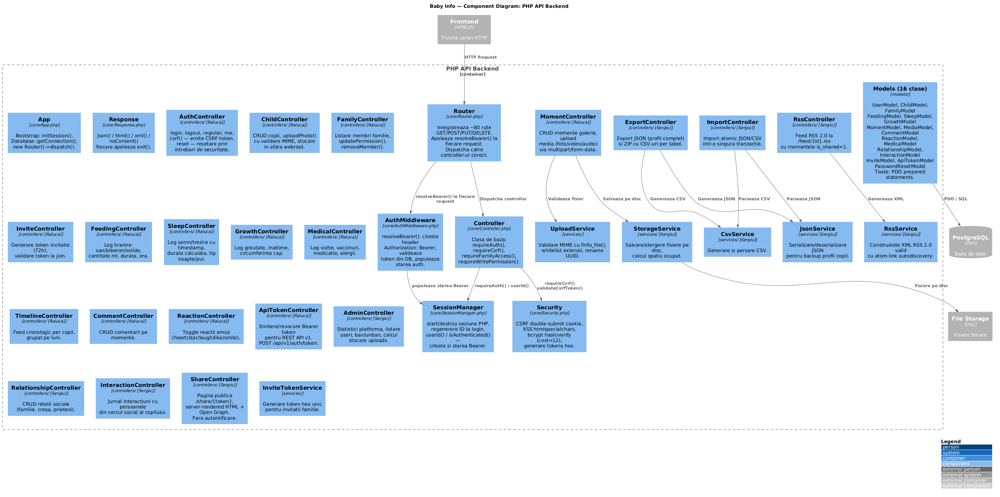

1. Introducere & Motivație
Baby Info este o platformă web orientată către familii, concepută pentru a centraliza și gestiona resursele și informațiile necesare creșterii unui copil (de la naștere până la pubertate). Aplicația facilitează monitorizarea alimentației, a somnului, istoricului medical, dar și păstrarea momentelor importante într-o galerie multimedia organizată cronologic.
Proiectul respectă cu strictețe cerințele tehnice impuse: partea de backend este dezvoltată exclusiv folosind PHP 8.2 (vanilla), gestionarea datelor este realizată printr-un sistem relațional PostgreSQL 16, iar componenta de frontend este construită din elemente standard HTML5, CSS3 și JavaScript vanilla, renunțând complet la framework-uri.
2. Design UI/UX (Design Resources)
Interfața utilizatorului a fost proiectată punând accent pe claritate, accesibilitate și viteză de încărcare, respectând principiile designului web responsiv. Nu au fost utilizate librării sau framework-uri CSS externe (precum Bootstrap sau Tailwind).
- Layout Responsiv: Arhitectura vizuală a paginilor este construită folosind
CSS Gridpentru definirea macro-structurilor (de exemplu, împărțirea paginii în sidebar și conținut principal) șiCSS Flexboxpentru alinierea elementelor interne ale componentelor (carduri, formulare, liste). Media queries asigură fluiditatea pe ecrane de dimensiuni reduse (mobile-first approach). - Cromatică și Tematică: Aplicația utilizează o paletă de culori blânde, adaptabile (ex: tematici specifice per copil) care să ofere o experiență de utilizare calmă, esențială pentru părinți. Au fost folosite variabile CSS (Custom Properties) pentru a permite schimbarea temelor în timp real.
- Interacțiune Asincronă: Pentru a oferi o experiență de tip SPA (Single Page Application) parțială, interacțiunile de bază (adaugare înregistrări, like-uri la momente, comentarii) se fac fără reîncărcarea paginii, comunicând cu backend-ul exclusiv prin
Fetch API.
3. Arhitectura Sistemului (Servicii Web)
Arhitectura aplicației urmează paradigma MVC (Model-View-Controller) pe server și expune un REST API robust. Comunicarea între client (browser) și server se face strict în mod asincron (AJAX via Fetch API).
Fluxul principal de date este următorul:
- Clientul trimite o cerere HTTP (GET/POST/PUT/DELETE) cu datele de autentificare (Cookie de sesiune sau Bearer Token pentru v1).
Router-ul PHP interceptează cererea, o trece prinAuthMiddleware(și alte filtre de securitate) și o trimite Controller-ului corespunzător (ex:FeedingController,MomentController).- Controller-ul validează datele de intrare, interacționează cu clasele
Modelpentru a citi/scrie în baza de date și returnează răspunsul sub formă de JSON.
Rulare și portabilitate: În dezvoltare, aplicația rulează cu serverul web încorporat în PHP (php -S localhost:8000 router.php), nefiind necesar XAMPP sau Apache. Fișierul router.php joacă rolul de front-controller, dirijând cererile către API (api/index.php), către scriptul de servire a fișierelor media (serve_media.php) sau către paginile statice din public/. Pentru portabilitate, proiectul include și fișiere .htaccess (în api/ și public/) care reproduc aceeași logică de rutare atunci când aplicația este găzduită pe un server Apache (ex. XAMPP), permițând astfel rularea în ambele medii fără modificări de cod.


4. Modelarea Datelor și Persistența
Toate informațiile sunt stocate într-o bază de date relațională PostgreSQL 16. Schema este puternic normalizată pentru a asigura integritatea datelor și suportă concepte de multi-tenancy (familii multiple, mai mulți copii per familie, permisiuni specifice).
Aplicația definește 15 tabele principale, printre care se numără: users, children, family_members, feedings, sleep_logs, growth, moments, media, și medical_records. Legăturile dintre tabele folosesc constrângeri de tip FOREIGN KEY cu acțiuni ON DELETE CASCADE unde este cazul (ex: ștergerea unui copil șterge și istoricul său de somn).
Interacțiunea cu baza de date este complet izolată în interiorul claselor din directorul models/ și este implementată folosind exclusiv extensia PHP PDO (PHP Data Objects).
5. Securitate și Funcționalități Avansate
Fiind o aplicație care prelucrează date sensibile despre minori, au fost implementate multiple straturi de securitate:
- Prevenirea SQL Injection: Utilizarea exclusivă a interogărilor pregătite (Prepared Statements) în PDO. Interpolarea string-urilor în SQL este strict interzisă.
- Protecție XSS (Cross-Site Scripting): Orice dată provenită din baza de date și afișată în paginile HTML server-rendered este trecută prin funcția
htmlspecialchars(). Pentru API-ul JSON, clienții front-end sunt instruiți să folosească `textContent` în loc de `innerHTML`. - Protecție CSRF: Cererile state-changing (POST, PUT, DELETE) realizate prin sesiune necesită un token CSRF (mecanism double-submit cookie).
- Upload-uri sigure: Fișierele multimedia și documentele medicale atașate sunt stocate fizic pe disc în afara rădăcinii web (webroot). Verificarea tipului de fișier nu se bazează pe extensie, ci pe citirea byte-ilor folosind
finfo_file(). Fișierele sunt servite clientului printr-un script PHP dedicat, doar după verificarea permisiunilor (ex:StorageService). - Criptare parole: Se folosește algoritmul bcrypt (
password_hashcu cost de 12).
Pe lângă facilitățile de bază (CRUD pentru entități), aplicația implementează un modul complex de Import/Export date. Părinții pot descărca profilul complet al copilului în format JSON sau o arhivă ZIP cu tabele CSV (procesat cu CsvService și JsonService). De asemenea, platforma expune un feed public și valid RSS 2.0 pentru momentele din galerie marcate ca fiind "shareable".
6. Film Demonstrativ
Mai jos se regăsește un videoclip de prezentare ce ilustrează principalele fluxuri de utilizare ale platformei Baby Info .